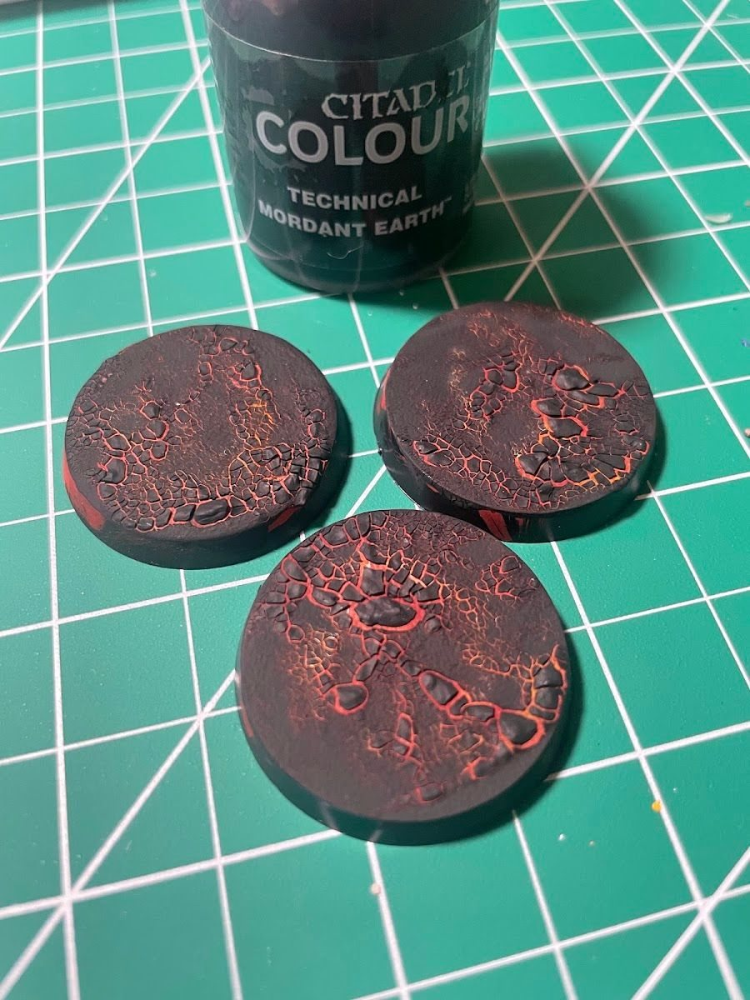

The base is usually the last thing people paint and the first thing that makes a mini look finished. My first "real" base was on Winter Soldier: a bit of dirt texture and a few grass tufts. Nothing fancy, and it made him pop immediately. The lesson I keep relearning since then is that a good base is part of the composition, not a decoration you add at the end.
Why this matters
A base can support the pose, tell a bit of the character's story and set up color contrast for the mini. It can also steal the show from the mini if it's too busy, too bright or pointing the eye in the wrong direction.
The short version
- Support the pose. The ground should make sense for how the mini is standing or moving.
- Reinforce the story. One or two details that say where they are or who they are.
- Point at the focal point. Rubble, pipes, water lines and debris can lead the eye to the face or weapon.
- Contrast, don't compete. The base should make the mini's colors look better, not fight them.
- Paint the rim. Seriously.
Story in one or two details
The TMNT minis were where I leaned into this. Leonardo got a custom sewer base built from scratch. Raphael got a grungy sewer scene with a couple of empty bottles and a lone red cup, which says a lot about Raph in a very small space. Donatello's base kept it subtle: a single broken robot arm hinting at late-night gadget work, with Vallejo Diorama Water Effects for murky sewer water.
Each of those has one idea. That's the trick. One idea reads. Five ideas are clutter.

Direction matters
When you place debris, pipes, grass or cracks, think about where they point. Lines on the base that run toward the mini's face or weapon pull the eye there. Lines that run off the edge pull the eye away. It's a small thing that changes how finished a mini feels.
Color and contrast
The base is a great place to set up contrast. On Garrus, I kept the armor cool and desaturated, then warmed things back up with the base so he didn't disappear. On Wrex, a lava base adds a quiet heat underfoot without being flashy.
Technical paints and texture
Texture paints and technical effect paints do a lot of the work for you. For the TMNT bases I used green stuff plus technical effect paints, then waited to see if the water would dry clear and the lava earth would crack the way I expected.

The lava cracked, just not as much as I wanted. I've heard that a layer of Mod Podge before and after the crackle paint helps it crack more, but I haven't tried it yet.
Team bases vs. hero bases
For a whole team or army, consistency beats complexity. My Skaven Blood Bowl team came together with a tight color palette and glowing green bases on every player. Nothing elaborate, just the same idea repeated, and the whole squad read as a unit.
Save the elaborate scenes for the hero minis. Spider-Woman got a simple base on purpose, so it wouldn't pull focus from the pose.
Paint the rim
Early on I hadn't quite realized I should paint the rim of the base. Hawkeye went out that way. A clean black (or other solid color) rim makes any mini look more finished instantly. You can even use rim color as a system: on my Marvel Zombies I tried a white rim for living characters and a black rim for zombies.
Checklist
- Does the ground match the pose?
- One story detail, not five
- Do the lines point toward the face or weapon?
- Does the base make the mini's colors look better?
- Rim painted
- Squad bases consistent
Next: once the base is done, find the golden angle for its photo.